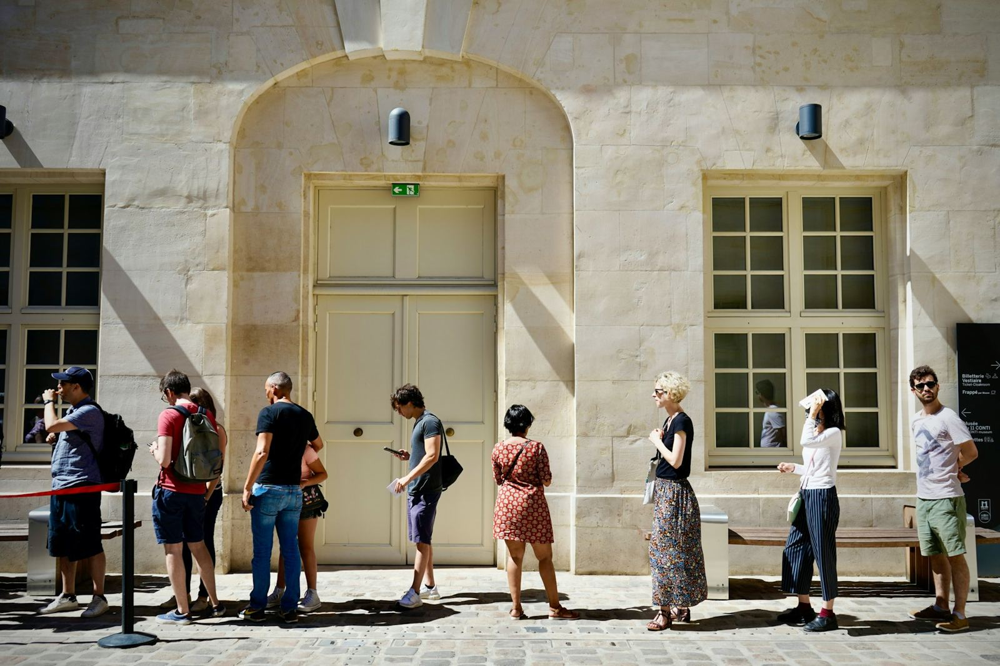

«Dos horas de cola para entregar un papel.»“Two hours in a queue to hand in one form.”
Ejemplo ilustrativoIllustrative exampleProblemas así aparecen una y otra vez, contados por personas distintas en sitios distintos. Eso es lo que medimos: personas, no mensajes.Problems like this come up again and again, told by different people in different places. That is what we measure: people, not posts.